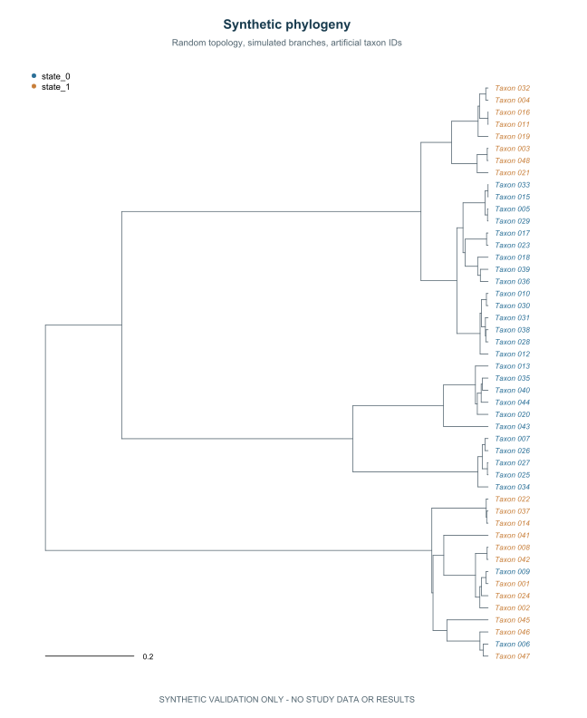
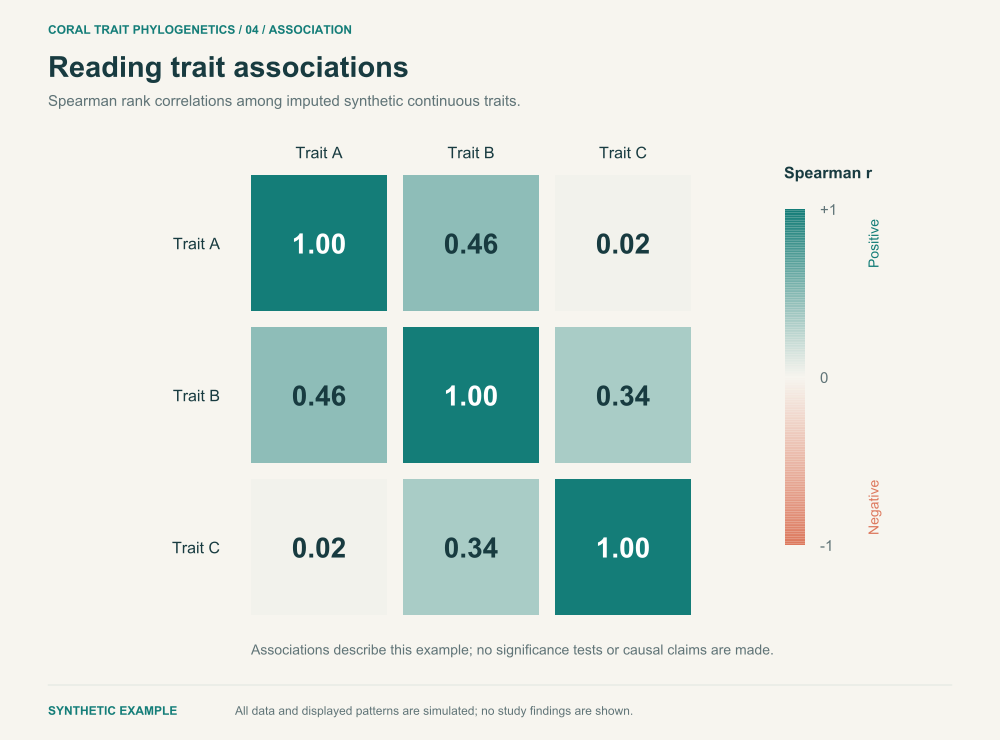

Research methods / Coral ecology
Coral traits.
An evolutionary
perspective.
Connecting incomplete trait records, phylogenetic relationships, and patterns of variation through a reproducible research workflow.
Research software. Synthetic illustrations. Empirical findings reserved for publication.

No branch or tip identifies a study species.
The approach
From incomplete observations
to interpretable structure.
Each stage makes an assumption explicit, preserves the link between taxa and traits, and produces an output that can be checked.
- 01
Align
Validate trait types and branch lengths. Match records to tree tips by identifier before any analysis.
Schema & tree matching - 02
Reconstruct
Hide known synthetic values and compare forest imputation with and without tree-derived predictors.
Missing-data evaluation - 03
Interpret
Estimate signal from observed entries. Explore completed traits through PCA and descriptive correlations.
Phylogenetic & multivariate analysis
A closer look
Four views of the workflow.
Choose a view to explore the method.
All plotted values and relationships are synthetic.
01 / Phylogeny
Put traits in
evolutionary context.
The branching structure provides a framework for comparing traits across related taxa. Here, every branch is simulated and every tip is an artificial identifier.
- Read the figure
- Follow the branches from the centre towards the tips. Colours distinguish two artificial states.
- Method
- Coalescent tree simulation, trait matching, and categorical state mapping.
- Interpretation
- The circular arrangement is a display choice. It does not change the relationships in the simulated tree.

02 / Imputation
Check the values
we fill in.
Known values are temporarily hidden so that predictions can be evaluated. Both approaches see the same masked table; one also receives predictors derived from the tree.
- Read the figure
- Lower error indicates closer predictions for this synthetic example. The paired values show the difference between the two fits.
- Method
- Random forest imputation, with and without phylogenetic eigenvectors.
- Interpretation
- A single mask is an execution example. It does not establish which approach is better for the empirical study.

03 / Trait space
See variation
across traits.
Principal component analysis brings several continuous traits into a shared view. The inputs are centred and scaled before projection.
- Read the figure
- Each point represents an artificial taxon. Nearby points have similar scores on the displayed components.
- Method
- Standardized PCA after imputation with tree-derived predictors.
- Interpretation
- This view is descriptive. Ordinary PCA does not adjust for phylogenetic covariance or propagate imputation uncertainty.

04 / Associations
Inspect how
traits move together.
A compact matrix summarizes pairwise rank associations. The colour scale makes the direction and magnitude of each synthetic association visible.
- Read the figure
- Values range from negative to positive association. Diagonal entries compare each trait with itself.
- Method
- Spearman correlations on the completed continuous trait columns.
- Interpretation
- These associations are descriptive, with no significance tests or claim of independent-species inference.
Reproducible by design
Follow the analysis.
Run it yourself.
The public workflow generates its own inputs, validates the data, fits the analyses, and exports the figures. The methods and their assumptions are documented alongside the code.
Read the methodsRscript scripts/install_dependencies.R
Rscript tests/test_pipeline.R
Rscript scripts/export_gallery.RFixed seeds · Anonymous synthetic inputs · Documented assumptions
Get the source code